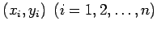
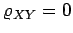

Inhalt Index DeskTop Bronstein

 Wahrscheinlichkeitsrechnung und Mathematische Statistik Mathematische Statistik Korrelation und Regression Lineare Korrelation bei zwei meßbaren Merkmalen
Wahrscheinlichkeitsrechnung und Mathematische Statistik Mathematische Statistik Korrelation und Regression Lineare Korrelation bei zwei meßbaren Merkmalen


Bei praktischen Aufgaben ist zu untersuchen, ob eine Stichprobe, die aus n Meßpunkten  besteht, aus einer zweidimensionalen, normalverteilten Grundgesamtheit mit dem Korrelationskoeffizienten  stammt, so daß die beiden Zufallsgrößen X und Y als unabhängig angesehen werden können. Der Test läuft wie folgt ab: